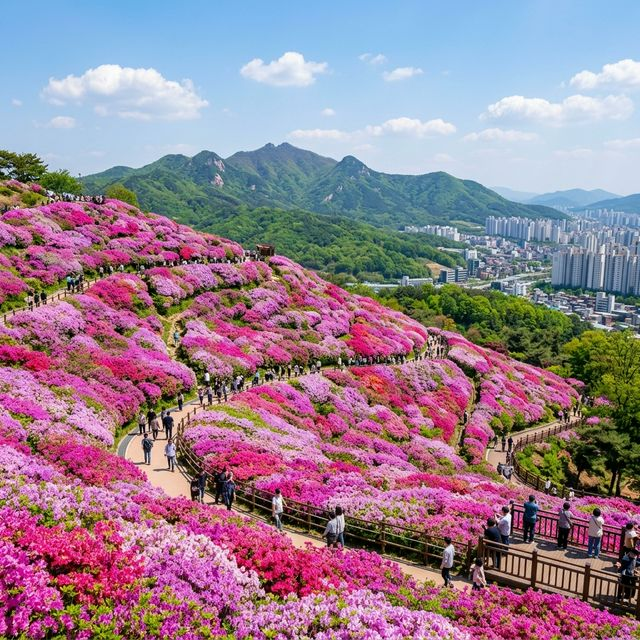
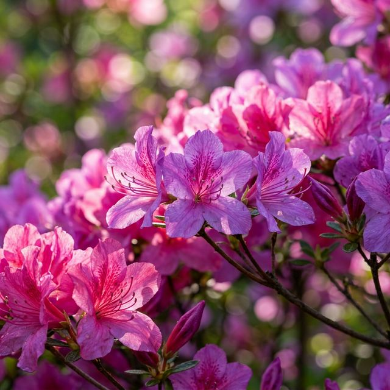
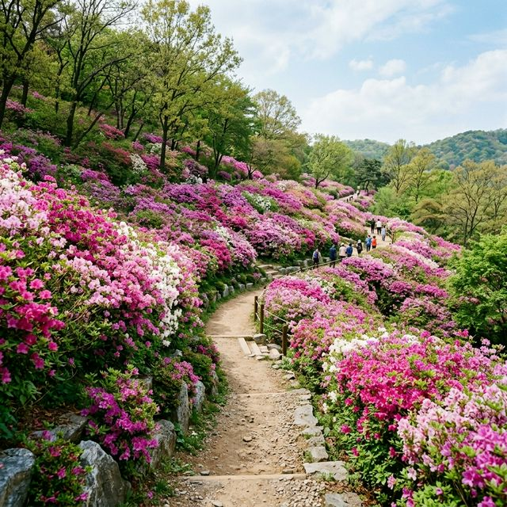

올해 군포 철쭉축제는 2026년 4월 18일부터 4월 26일까지 9일간 군포시 철쭉동산과 철쭉공원, 초막골 생태공원 일대에서 개최됩니다. 2026년의 테마는 '꽃으로
피어나는 군포의 꿈'으로, 장기간의 팬데믹 이후 완전한 일상 회복의 기쁨을 꽃과 음악으로 표현할 예정입니다. 개막 이틀 전인 4월 16일 현재, 철쭉동산 하단부는 이미 꽃망울을 터뜨리기 시작했으며
주말에는 50% 이상의 개화율을 보일 것으로 예상됩니다.
축제 기간에는 자동차 없는 거리가 조성되어 관람객들이 마음껏 꽃길을 걸을 수 있는 환경을 제공합니다. 2026년에는 특히 야간 경관 조명을 더욱 보강하여 밤에도 찬란하게 빛나는 철쭉의 자태를 볼 수
있게 되었습니다. 단순히 보는 축제를 넘어 시민들이 주인공이 되는 참여형 공연과 전시가 풍성하게 준비되어 있으니, 수도권 거주자라면 이번 주말 일정에 반드시 체크해 두셔야 합니다.

군포 철쭉동산의 진면목은 그 압도적인 밀도에 있습니다. 다른 지역의 철쭉 명소들이 듬성듬성 꽃을 피우는 것과 달리, 이곳은 나무와 나무 사이의 간격이 거의 없을 정도로
촘촘하게 식재되어 있습니다. 덕분에 꽃이 만개하면 초록색 잎이 거의 보이지 않을 정도로 온통 분홍빛 파도가 너울대는 모습을 볼 수 있죠. 인공적으로 조성된 동산이지만 세심한 관리 덕분에 자연 산지
못지않은 생명력을 자랑합니다.
동산 전체를 가로지르는 산책로는 지그재그 형태로 설계되어 있어, 걷는 내내 각기 다른 각도에서 꽃의 향연을 감상할 수 있습니다. 2026년에는 동산 상단부에 조망 데크가 증설되어 산본 신도시 전경과
어우러진 철쭉 군락을 한눈에 담을 수 있게 되었습니다. 굽이굽이 이어지는 꽃길을 따라 걷다 보면 일상의 피로는 어느새 사라지고 긍정적인 에너지가 가득 차오르는 것을 느끼실 수 있을 것입니다.
많은 분이 가장 궁금해하시는 절정 시기(Peak)는 축제 개막 주인 4월 20일 전후가 될 것으로 보입니다. 기상청의 올봄 기온 데이터에 따르면 작년보다 평년 기온이 다소
높아 개화가 2~3일 정도 앞당겨질 전망이죠. 철쭉은 벚꽃보다 화기가 길어 약 2주일 정도는 예쁜 모습을 유지하지만, 가장 생생한 빛깔을 보고 싶다면 축제 초반부에 방문하시는 것이
유리합니다.
특히 상단부보다는 해가 잘 드는 하단부부터 꽃이 먼저 피기 시작합니다. 만약 방문 당일 하단부가 조금 지기 시작했다면 실망하지 말고 언덕 위쪽으로 올라가 보세요. 고도 차이에 따른 개화 시차 덕분에
동산 곳곳에서 싱싱한 꽃송이들을 발견할 수 있습니다. 실시간 군포 시청 홈페이지의 '철쭉 개화 리포트'를 매일 아침 확인하신다면 헛걸음할 확률을 제로로 줄일 수 있습니다.

철쭉동산에서 인생 사진을 건지기 위한 첫 번째 명당은 동산 중앙의 대각선 보행로입니다. 이곳은 좌우가 온통 철쭉 벽으로 둘러싸여 있어 인물을 정중앙에 배치하면 마치 꽃의
여왕이 된 듯한 구도를 잡을 수 있습니다. 두 번째는 동산 가장 하단부에서 위를 올려다보며 찍는 로우 앵글입니다. 파란 하늘과 대비되는 붉은 꽃의 색감이 가장 극적으로 표현되는 포인트죠.
마지막 세 번째 스팟은 '철쭉폭포' 근처의 나무 벤치입니다. 폭포의 시원한 물줄기와 철쭉이 조화를 이뤄 청량감 넘치는 사진을 남길 수 있습니다. 사진을 찍을 때는 가급적
흰색이나 파스텔 톤의 옷을 입으세요. 배경이 워낙 화려하고 선명하기 때문에 무채색 계열의 옷이 인물을 훨씬 돋보이게 해줍니다. 햇빛이 강한 정오보다는 오전 10시 이전이나 오후 4시 이후의 부드러운
빛을 활용하시길 권합니다.
군포 철쭉축제에 올 때 절대 금기 사항이 하나 있다면 바로 '자차 이용'입니다. 축제장 주변은 평소에도 교통량이 많은 데다 주차 공간이 턱없이 부족하여, 주말에 차를
가져오시면 꽃보다 앞차의 뒷모습을 더 오래 보게 될 것입니다. 가장 현명한 방법은 지하철 4호선을 이용해 '수리산역'에서 내리는 것입니다. 2번 출구로 나와 5분만 걸으면 바로 철쭉동산 입구에 닿을 수
있습니다.
지하철역에서 동산까지 가는 길에도 예쁜 꽃 장식과 거리 공연이 즐비해 지루할 틈이 없습니다. 만약 어쩔 수 없이 차를 가져오셔야 한다면, 군포 시청이나 당정역 인근 공영 주차장에 차를 세우고 셔틀버스를
이용하세요. 2026년에는 축제 기간 한정으로 셔틀버스 배차 간격이 10분으로 단축되어 훨씬 편리해졌습니다. 대중교통 이용은 여러분의 소중한 시간을 벌어다 주는 가장
확실한 방법입니다.

축제 기간 중 주말에는 철쭉동산 앞 도로인 8단지 사거리부터 소방서 사거리까지 '노(No) 카(Car)' 존이 형성됩니다. 이 넓은 아스팔트 도로는 거리 예술가들의 무대가
되고, 시민들을 위한 쉼터와 다양한 체험 부스가 들어섭니다. 아이들이 마음껏 뛰어놀고 부모님들은 노천카페에서 여유를 즐기는 광경은 군포 철쭉축제에서만 볼 수 있는 자유로운 풍경입니다.
체험 부스에서는 철쭉 펜던트 만들기, 꽃차 시음회, 페이스 페인팅 등 온 가족이 참여할 수 있는 프로그램이 가득합니다. 특히 2026년에는 '디지털 꽃 그리기 대회'가 열려 태블릿 PC를 이용한
창의적인 예술 활동도 지원합니다. 도로 한복판에서 즐기는 먹거리 역시 놓칠 수 없는 재미죠. 깨끗하게 관리되는 친환경 푸드트럭 구역에서 맛있는 간식을 즐기며 축제 분위기에
젖어보세요.
철쭉동산만 보고 돌아가기 아쉽다면 바로 인접한 초막골 생태공원을 함께 코스로 묶으세요. 이곳은 인공적인 나무 식재보다는 자연 상태의 숲과 습지를 보존하고 있어 아이들에게
훌륭한 생태 교육장이 됩니다. 특히 공원 내 '상상놀이터'는 창의적인 놀이시설로 가득해 아이들이 에너지를 발산하기에 최적의 장소입니다.
동산에서 생태공원까지는 연결 통로를 통해 도보로 약 10분이면 이동할 수 있습니다. 생태공원 내부에도 다양한 종류의 꽃과 나무들이 조화롭게 배치되어 있어, 철쭉동산의 강렬한 색채와는 또 다른
차분한 초록의 쉼을 제공합니다. 돗자리를 펴고 피크닉을 즐기기에도 안성맞춤인 공간이니, 가족 단위 방문객이라면 도시락을 준비해 오시는 것을 추천드립니다.
축제장에서 도보나 버스로 10분 거리에 있는 산본 중심상가는 '작은 명동'이라 불릴 만큼 다양한 맛집들이 밀집해 있습니다. 오래된 노포 맛집부터 젊은 층을 겨냥한 트렌디한
카페들까지 선택의 폭이 매우 넓죠. 꽃구경 후 출출해진 배를 채우기에 이보다 좋은 곳은 없습니다. 군포 인근의 로컬들이 추천하는 가성비 맛집 지도를 미리 검색해 두시면 완벽한 마무리가 될
것입니다.
조금 더 정겨운 분위기를 원하신다면 군포 역전 시장을 방문해 보세요. 백종원의 골목식당 촬영지로도 유명한 이곳은 족발, 떡볶이 등 시장 특유의 활력 넘치는 먹거리가
즐비합니다. 축제장 근처의 임시 식당보다 훨씬 저렴하고 맛있는 식사를 할 수 있어 알뜰 여행자들에게 인기가 높습니다. 시장 상인들의 넉넉한 인심은 덤입니다.
철쭉동산은 생각보다 경사가 있는 편이므로 반드시 편안한 운동화를 착용하세요. 예쁜 사진을 위해 구두를 신었다가는 꽃보다 발 통증을 더 많이 기억하게 될지도 모릅니다.
또한, 동산 내부에는 그늘이 많지 않으므로 양산이나 선글라스, 자외선 차단제는 필수입니다. 수분 보충을 위한 개인 생수 한 통을 준비하는 센스도 잊지 마세요.
휠체어나 유모차를 동반하시는 경우, 완만한 경사로로 설계된 무장애 산책로를 이용하시면 편리합니다. 2026년에는 장애인 전용 관람 구역과 휴게 시설이 확충되어 더욱
포용적인 축제 환경을 마련했습니다. 반려견과 함께 동행할 때는 반드시 리드 줄을 착용하고 배변 봉투를 지참하는 펫티켓을 지켜주세요. 모두가 즐거운 축제는 작은 배려에서 시작됩니다.
2026년 봄, 군포 철쭉동산은 여러분을 위해 세상에서 가장 화려한 레드 카펫을 깔아두었습니다. 콘크리트 숲으로 가득한 도심 속에서 이렇게 압도적인 자연의 빛깔을 마주할
수 있다는 것은 군포 시민들뿐만 아니라 수도권 모든 이들에게 큰 축복입니다. 일상의 무거운 짐은 잠시 내려놓고, 끝없이 펼쳐진 분홍빛 파도 속에 몸과 마음을 맡겨보시는 건 어떨까요?
사랑하는 사람과 함께 걷는 철쭉길은 그 어떤 말보다 깊은 위로와 행복을 전해줄 것입니다. 4월의 짧은 봄날, 놓치면 일 년을 기다려야 하는 이 마법 같은 순간을 절대
놓치지 마세요. 이번 주말, 여러분의 카메라는 군포의 찬란한 철쭉으로 가득 차게 될 것입니다. 다음 포스팅에서도 여러분의 일상을 풍요롭게 할 알찬 소식으로 찾아뵙겠습니다!